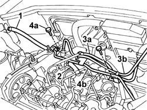
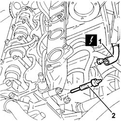
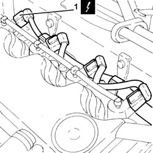
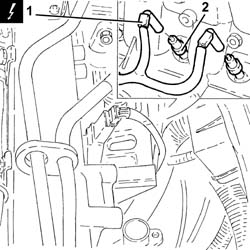

5520C10 glow plugs - r+r
- Path
- Procedures > 55 ELECTRICAL EQUIPMENT > 5520 ENGINE STARTING > 5520C cold starting system (diesel engines) > 5520C10 glow plugs - r+r
- Kind
- repair procedure (removal / refitting; the operation number is the code)
- Applies to
- engines: 1.9 JTD 8V, 1.9 DIESEL; all production periods
- Interactive page
- https://sloeber94.github.io/elrnDB-fDbl/en/#/2584916
Applies to: engines: 1.9 DIESEL; all production periods
 Removing
Removing
 Refitting
RefittingDisconnect the battery negative terminal.
Op. 1016A22 CAM COVER WITH FUEL DUCT - R + R AND REPLACE GASKET
1. Open the band and disconnect the flexible pipe, expansion tank side.
2. Open the retaining band and disconnect the flexible pipe, intake manifold side.
3. Release the pipes (3a) and (3b) to the diesel filter from the retaining bands on the rigid pipe.
4. Undo the fixing bolts (4a) and place the rigid pipe (4b) at the side.

Applies to: engines: 1.9 DIESEL; all production periods
1. Disconnect the electrical connections for the heater plugs.
 | Name | Connector |
|---|---|---|
1 | Heater plugs |
2. Undo and remove the heater plugs.

Applies to: engines: 1.9 DIESEL; all production periods
Refitting
RemovingPlace the heater plugs in position and tighten to torque.
 | Fastening | Component | Ø | Value (daNm) |
|---|---|---|---|---|
- | Spark plug | GLOW PLUGS | 12 x 1.25 | 1.5 |
Connect the electrical connections for the heater plugs.
| Name | Connector |
|---|---|---|
- | Heater plugs |
Position the rigid water pipe and secure it using the bolts.
Secure the diesel filter pipes to the retaining bands.
Connect the flexible pipe to the expansion tank and secure it using the retaining band.
Connect the flexible pipe to the intake manifold and secure it using the retaining band.
Op. 1016A22 CAM COVER WITH FUEL DUCT - R + R AND REPLACE GASKET
Connect the battery negative terminal.
Applies to: engines: 1.9 JTD 8V; all production periods
Removing
RefittingProceed with the removal
Op. 1044B10 FUEL FILTER ASSEMBLY - R + R OR REPLACE.
Proceed with the removal
Op. 1080C24 E.G.R. SYSTEM SOLENOID - R + R.
Proceed with the removal
Op. 1060F50 FUEL RETURN MANIFOLD - R R.
1. Disconnect the electrical connections from the injectors and move the wiring aside.
| Name | Connector |
|---|---|---|
1 | Injector |

Applies to: engines: 1.9 JTD 8V; all production periods
1. Disconnect the electrical connections from the heater plugs.
| Name | Connector |
|---|---|---|
1 | Heater plugs |
2. Undo and remove the heater plugs.

Applies to: engines: 1.9 JTD 8V; all production periods
Refitting
RemovingPlace the glow plugs back in their housings and tighten them to the recommended torque.
| Fastening | Component | Ø | Value (daNm) |
|---|---|---|---|---|
- | - | GLOW PLUGS | M12 | (Cylinder head side) 1.4 ÷ 1.7 |
Connect the electrical connections to the heater plugs.
Place the electrical wiring back in its housing and connect the electrical connections to the injectors.
Proceed with the refitting
Op. 1060F50 FUEL RETURN MANIFOLD - R R.
Proceed with the refitting
Op. 1080C24 E.G.R. SYSTEM SOLENOID - R + R.
Proceed with the refitting